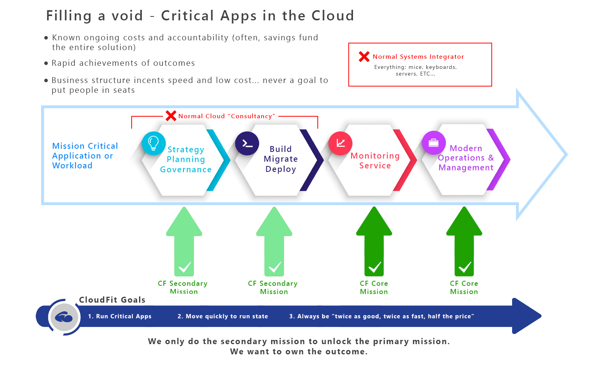
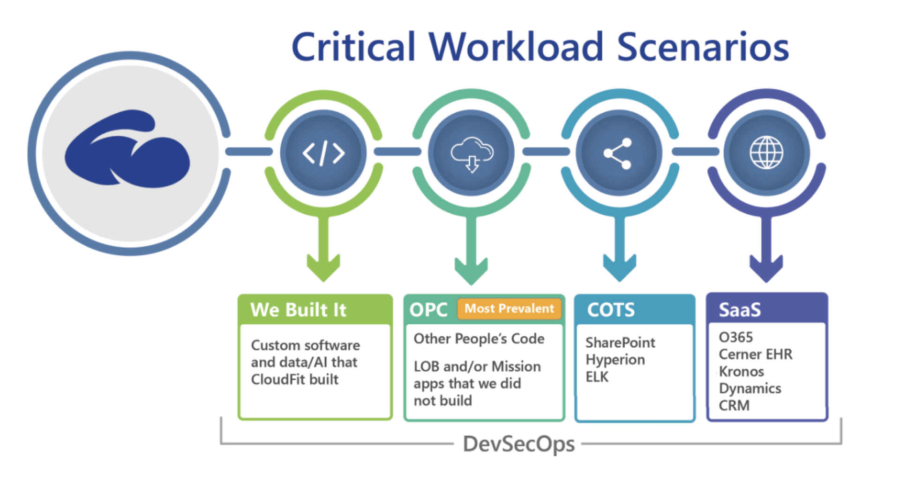
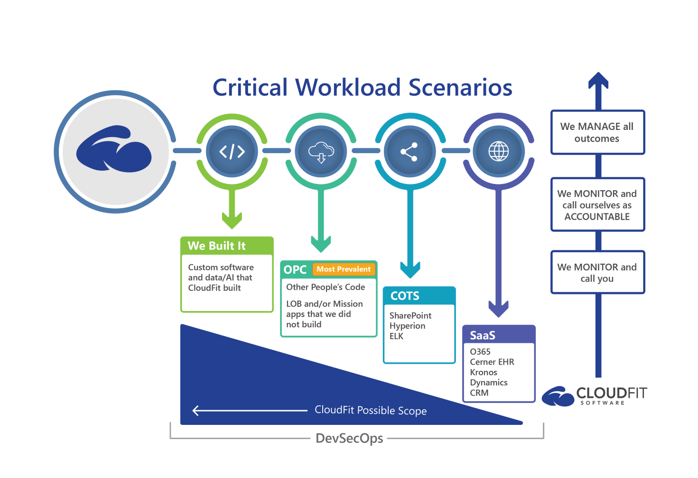
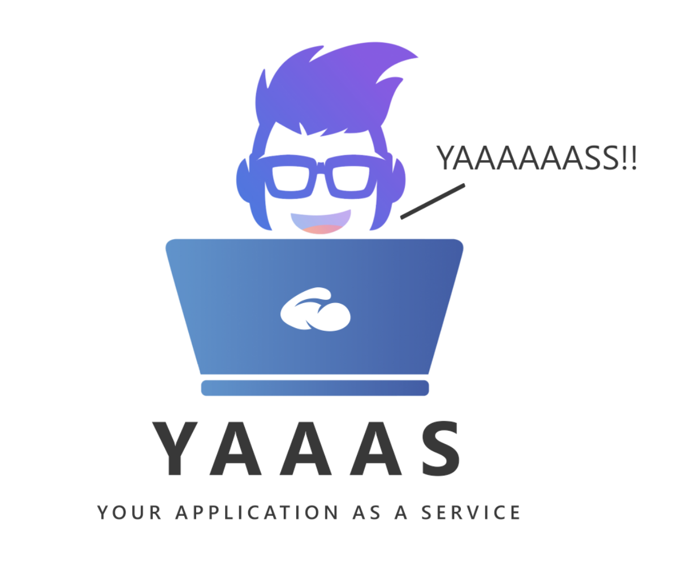

We are thankful that CloudFit Software’s delivery quality and style are resonating with customers and partners. We are thankful that our CloudFit Software (CFS) Platform is providing so much value in both quality and cost of operations/maintenance for mission critical workloads.
We intentionally keep our public message vague (on our website and beyond) while we continue to widen the gap between our delivery and the rest of the [legacy] service delivery industry. However, we have decided to give a little bit of a glimpse behind the curtain into what and how we are executing for our commercial, regulated industry, federal and DoD customers. There is no better time than the present to let more of our message out to the world.
Why is the CloudFit Software story resonating with customers?
- We serve our customers. We treat them like customers. We do not try to sell them anything. There is an infinite amount of work to be done, and we do not need to sell anything to anyone.
- We have great people. Our people have servant hearts, and they all have the unique combination of smarts and experience. We do not just talk about cloud. We have built and run the world’s largest clouds and the workloads that run on them.
- We are literally the only company who is providing YAaaS = Your Application as a Service
Figure 1: Your Application as a Service (YAaaS)

First, let’s start with what CloudFit Software is NOT:
- We are not an outsourcer or normal Systems Integrator. We do not want your mice and keyboards. We want to be accountable for your mission critical applications/workloads (and the infrastructure that underpins them). We do not want to make money through “people-in-seats”. We bring an engineering and scale approach to operations and maintenance.
- We are not a consultancy. We are a Cloud Product Group. We often consult with customers, but we send Product Group people to consult. We do not employ consultants. There are no pure theorists at CloudFit Software. There is only real, scale experience here. Most consultancies want longer-duration projects with lots of people because that’s how they make money. And, of course, normal consultancies will not touch runstate or accountability because they think there is no money in it, and they have no experience with it. Run-state accountability terrifies consultants because talk doesn’t equal results. Thus, customers are often left with awesome applications built by consultants with no way to get the apps into production in a manner that feels safe, nor in a manner where costs and quality can be quantified reliably. In contrast, CloudFit Software wants fast, inexpensive projects that lead to run state so we can run YAaaS (Your Application as a Service).
For every critical application/workload, there are four key steps:
- Strategy and Planning. Agreeing the intent and plan.
- Doing the Work. For example, standing up the infrastructure. Migrating the application. Building/Coding the application.
- Monitoring. Cyber, Availability and Performance, Etc.
- Modern Operations and Management / Proactive and Reactive Accountability. Who is on the hook when it breaks? Who keeps it from breaking in the first place? Who keeps it secure?
CloudFit Software’s core business is 3 and 4. We do 1 and 2 as needed and on the grandest scale (writing code for the clouds themselves), but we do those selectively, and we only do 1 and 2 to drive 3 and 4.
Figure 2: Filling a Void

Wouldn’t it be cool if you could get [one of] the most experienced groups of people on planet earth [at running scaled cloud services] to run Your App as a Service (YAaaS)? Wouldn’t it be cool if that “unicorn” provider had their own proprietary, patented platform that they brought with them (at no license cost to you) to manage YAaaS? And wouldn’t it be cool if that platform gave you reliable service quality and costs? Wouldn’t it be cool if you just paid for the managed fee like a cell phone bill without a commitment? Wouldn’t it be cool if they could do it in every Impact Level? Wouldn’t it be cool if they could do it on public or private cloud? Wouldn’t it be cool if they could do it at the Intelligent Edge in disconnected state working with the warfighter as “Smart Hands”? What if the model of managing YAaaS was like building management? For example, if you pay someone to manage your building, they’d bring their hammer. If you get someone else to manage your building later, the first person’s hammer leaves with them. CloudFit Software [the company] brings our patented (and DoD accredited) CloudFit Software (CFS) platform to the fight when we are involved. What if it wasn’t a dream and was actually being delivered at scale today across every industry and vertical including DoD?
Customer Applications/Workloads break into four categories:
- Software as a Service (SaaS). For example, who is accountable for the end-to-end user experience including the last mile? For example, do you know in realtime today if your CEO drops a Teams call?
- Commercial Off The Shelf Software (COTS). Who is taking accountability for your mission critical COTS application end-to-end (e.g. financial software)?
- Other People’s Code (OPC). The majority of critical workloads are custom development solutions that were built by someone else. Who is taking accountability for those critical apps end-to-end?
- CloudFit Software built applications. If we build it, we run it.
Figure 3: Critical Workloads

What other companies can take your 30+ year old mainframe applications and re-imagine and rebuild them in the cloud? And how many of those companies will act as the accountable product group for that application forever after they build it? Of course, the answer is “none”. We build and run software for some of the world’s largest companies (and DoD). Have an idea and funding for a SaaS product? We build it and run it forever.
What other company will take on problematic line of business (or mission) code, fix it and run it forever with a contract that dictates accountability? Of course, the answer is “none”.
From an accountability perspective, there are vertical and horizontal accountabilities.
- Vertically, we can just monitor (cyber, availability and performance, etc) and call you when there is an issue. And, we can call ourselves to drive the end-to-end resolution. And, we can take proactive accountability to keep the app running securely in the first place.
- Horizontally, we will also take accountability to fix bugs in code that we did not write. And, we can take accountability to add new features to the applications whether we wrote them or not.
Figure 4: Vertical and Horizontal Accountability

Here’s a recent example of how YAaaS works:
- We manage the COTS Financial System for a multi-billion dollar company. The COTS software runs on Infrastructure as a Service (IaaS) on Azure. We led the migration from on-premise to Azure well over a year ago.
- The customer has a separate database support vendor company (CloudFit could do that part too, but there’s no reason to displace the existing SI…we work alongside them)
- The customer has an internal application support team for the mission critical COTS application
- The customer has a contract with the ISV of the COTS product
- In this particular YAaaS instance, think of it as layers in the cake: CloudFit owns the infrastructure, the database contractor owns the databases, the customer application team owns the application, the ISV owns the COTS product, and CloudFit wraps the entirety of the outcome and takes end-to-end accountability.
- Here’s the rundown of a recent outage experience with CloudFit Software at the helm:
- The application went down on a Saturday morning
- CloudFit Software’s CFS platform caught the issue immediately, and the right workflows triggered automatically
- We determined quickly that root cause was disk throttling. Then, we discovered that the root cause of the root cause was that someone from the customer had installed other 3rd party software on the servers without going thru approvals and without communicating.
- We worked with all related teams and vendors on a bridge that we hosted from an incident command perspective.
- We uninstalled the software, but it didn’t fully uninstall, and the servers didn’t come back up.
- We drove the decision to roll to backups (note that we actually had working backups because we are accountable).
- We fully restored and validated services.
- CloudFit is driving the Post Incident Review and associated action items across all parties from a position of accountability
- What might have been the experience without CloudFit Software?
- It is possible that nobody would have noticed the outage until Monday morning
- It is possible that the customer would have had to run incident command
- It is possible that the Infrastructure team would have pointed to the application team as root cause because the application team installed errant software
- It is possible that the infrastructure team would have exited the incident bridge because it wasn’t their root cause
- It is possible that there would have been no validated backups to roll back to
We believe that YAaaS is unique in the industry. YAaaS is our core business. We are doing it at scale across all industries and verticals today. We are ready to talk about it a little bit more broadly without NDAs.
Here’s the great news for our customers and our partners:
- Who else is doing it in commercial?
- Who else is doing it in regulated industries like financial and healthcare?
- Who else is doing it in Federal and DoD at all Impact Levels, Public or Private cloud, Intelligent Edge or Hypercale cloud, connected or disconnected?
- Who else is doing it on top of patented, accredited-in-DoD platform to eliminate the human mistakes and costs?
Challenge: Go ask any CloudFit Software customer if we are unique in what we deliver and in how we deliver. They will say “Yaaaasss!!”
Figure 5: Yaaaaaasss!!!
Want to talk more? Contact us at getfit@cloudfitsoftware.com or contact us for more information via the Azure Marketplace.